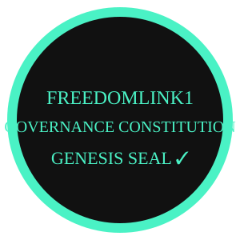

The lineage is governed by the Steward, Custodians, Sentinels, and the Root Build itself.
Developer Safety, Lineage Safety, Sovereign Safety, Continuity.
All governance actions require ceremony, registry update, sovereign signature, and logbook entry.
The lineage is the canonical record of epochs, modules, POCs, sentinels, stewardship, and governance events.
The steward signs sovereign artifacts and protects continuity.
Amendments require proposal, review, verification, signature, and logbook entry.